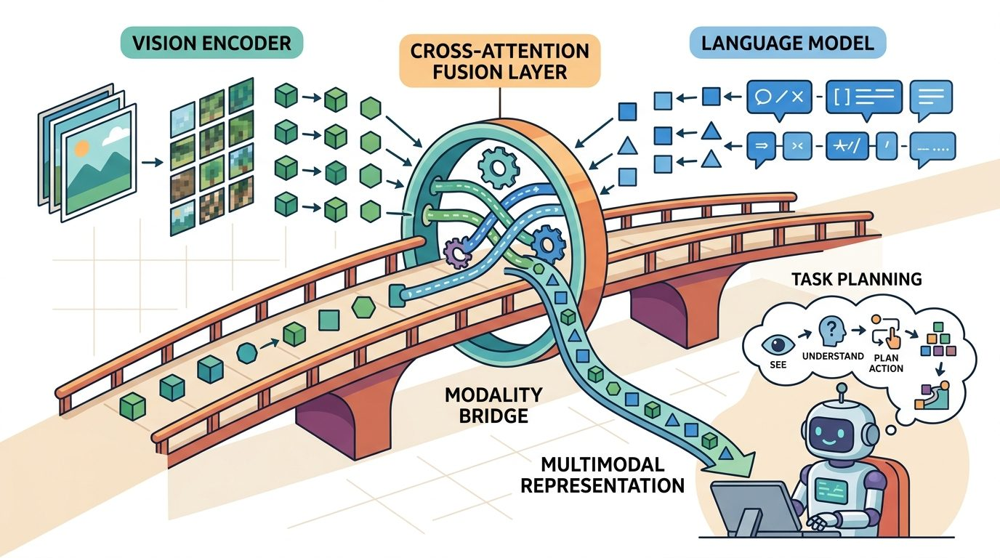
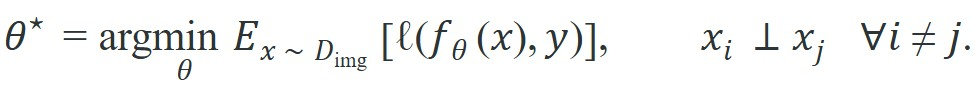
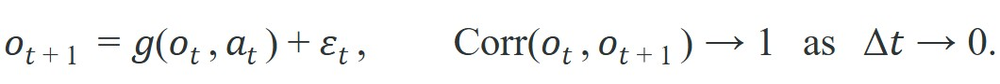
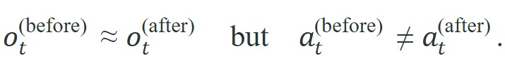
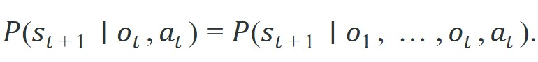
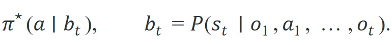

"A model trained on frozen moments cannot know that the cup moved because the arm moved it. The world does not hold still while you think."
Section 32.6

This section assumes familiarity with partial observability and the POMDP formulation from section 2.7, and with the covariate-shift argument behind DAgger from section 21.3. The fixes introduced here (temporal context, recurrent state, action chunking) are developed into full system designs in section 34.2, where RT-2 applies them inside a closed-loop vision-language-action model. The broader question of how language models manage temporal uncertainty when acting as planners is taken up in Chapter 33.
As Figure 32.6A shows, freeze a single frame of a kitchen and a state-of-the-art model can tell you the cup is half full, the kettle is on the left burner, and the gripper is open. Unfreeze time and that same model cannot tell you whether the cup is being filled or emptied, because a still image never carries which way the world is moving. A static vision-language model (VLM) maps a single still image plus text to an output (a caption, a detection, or an action) with no memory of previous frames. Before a controller treats a caption or detection as current world state, it must check that output against motion, occlusion, recency, and actuator delay. The figure below lays out exactly this failure map.
Curriculum, depth, and self-containment. Static VLMs see snapshots, while robots act in streams. Dynamic worlds require latency budgets, temporal consistency, and verification after action. For Limits of static VLMs in dynamic worlds, the practical reading is to pin down the interface, assumptions, concrete example, and failure mode before comparing methods.
Production and evaluation contract. Every VLM claim in a robot loop needs a time stamp and a recheck policy. For Limits of static VLMs in dynamic worlds, treat the diagram, code, table, exercise, warning, and references as one evidence packet: boundary, artifact, tool choice, transfer check, failure mode, and source grounding.
Before accepting a Limits of static VLMs in dynamic worlds result, name the loop variable that changed, the tool that makes it reproducible, the failure that would fool the metric, and the source that backs the claim.
Write the evidence row around temporal mismatch: frame time, model response time, world change between observation and actuation, selected action, safety gate result, and the failure label for stale or hallucinated state.
A robot arm reaches for a cup, but by the time the vision-language model finishes its forward pass, the cup has slid two centimeters. The model is confident; the grasp fails. This is not a rare edge case: every static VLM is trained on frozen images and queried on a world that never stops moving. As VLMs move from benchmarks into manipulation, navigation, and search-and-rescue, this temporal gap has become the central failure mode that field deployments keep hitting. This section maps exactly where the gap opens, why perception latency and covariate shift conspire to break confident predictions, and what architectural patches close it.
The technical contract for limits of static VLMs in dynamic worlds resolves into a usable mental model in three moves: define the object of study, connect it to the agent loop, then test it with a compact implementation.
The key question in Limits of static VLMs in dynamic worlds is practical: what must the agent know, what can it observe, what action is available, and what evidence shows that the action worked under the stated conditions?
A representation earns its place when it changes the measurable action interface. In limits of static vlms in dynamic worlds, the reader should keep asking which decision becomes easier, safer, or more reliable.
What exactly breaks when you drop a model trained on millions of still photographs into a robot that must act in real time? Not the vision, not the language, not the weights: what breaks is the assumption baked into every training update that observations arrive independently of each other and of what the robot just did. A model trained on the frozen past is not a policy for the moving present; it is a confident record of a world that no longer exists.
A static vision-language model is a function from a single observation to an output: a caption, a detection, or, in a policy wrapper, an action. We can ask formally why such a model degrades the moment it is dropped into a temporal embodied loop. There are four distinct arguments, and they compound.
A VLM is trained by minimizing expected loss over a dataset of images drawn independently:

The independence assumption $x_i \perp x_j$ is what makes the empirical average a valid estimator of the population risk. At deployment the agent does not see independent draws. It sees a trajectory whose frames are produced by its own dynamics:

Consecutive frames are nearly identical, errors are temporally correlated, and the visited state distribution $d^\pi(o)$ is induced by the policy itself, not by $\mathcal{D}_{\text{img}}$. The training risk no longer bounds the deployment risk, because the test distribution $d^\pi \neq \mathcal{D}_{\text{img}}$. This is the frozen-world fallacy: a model optimized on independent snapshots is silently wrong the moment the world it inhabits keeps moving. It is the same covariate-shift mechanism that DAgger was built to address: small per-step errors move the agent into states never seen during training, and the errors accumulate quadratically in the horizon.
Recap: training assumes independent images; deployment feeds correlated trajectory frames, so training risk no longer bounds deployment risk.
Distribution shift explains why the average error grows, but a second, sharper failure appears even on frames drawn from the training distribution: two visually identical frames can demand opposite actions. Embodied tasks routinely contain pairs of states that look identical to a single-frame encoder but demand opposite actions. Consider a gripper (the robot's end effector, the mechanism at the tip of the arm that closes on an object) at world position $p$ just before a grasp versus the same gripper at $p$ just after the object is secured. The pixels can be nearly the same; the correct action is "close and lift" in one case and "retract and transport" in the other. Write the perceptual aliasing as

A static policy is a function of the current observation only, $\pi(a \mid o_t)$. If $o_t^{(\text{before})} \approx o_t^{(\text{after})}$, then $\pi(a \mid o_t^{(\text{before})}) \approx \pi(a \mid o_t^{(\text{after})})$ by continuity of $f_\theta$. The model is structurally unable to emit two different actions for two observations it cannot distinguish. The phase of the task (which is hidden state) is exactly the information a single frame discards. In practice, a larger and more accurate single-frame model often fails more often on multi-stage tasks, not less, because its higher-confidence predictions make it commit harder to the wrong phase action rather than hedging with a conservative motion; this is not a strict law, but the direction the argument above predicts and the direction ablations in the literature tend to show.
So far: distribution shift breaks the training-risk guarantee, temporal aliasing means visually-identical frames can require opposite actions, and a static policy's continuity makes it structurally unable to tell those aliased frames apart, so the next section shows why fixing this requires abandoning the single-frame Markov assumption entirely.
A single-frame policy is only optimal when the observation is a sufficient statistic for the state, that is, when the process has the Markov property (the next state depends only on the current observation and action, not on any earlier history) in $o_t$:

Embodied perception violates this because cameras give partial observations: occlusion, motion blur, limited field of view, and the phase ambiguity above all hide state. The problem is then a Partially Observable Markov Decision Process (POMDP), and the optimal policy is a function of the history (or a belief state), not the latest frame:

A static VLM attempts to approximate $\pi^\star(a \mid b_t)$ with $\pi(a \mid o_t)$. When the Markov assumption holds this is exact; when it fails (the common case in manipulation and navigation) the static model cannot recover the missing state, no matter how large the backbone. The gap is information-theoretic, not a question of capacity.
The degradation is not a tuning problem. It is the composition of three failures: the training risk stops bounding the deployment risk (distribution shift), continuity forces equal outputs on aliased frames (temporal aliasing), and a single frame is not a sufficient statistic for the hidden phase (broken Markov property). Each is fixed by giving the model access to the history.
To make the argument concrete, compare a single-frame policy against a policy that stacks a short history window, on a temporally structured manipulation benchmark such as Franka Kitchen (a multi-stage task: approach, grasp, manipulate, release). The single-frame policy maps the latest RGB frame to an action; the context policy concatenates the last four frames so the network can infer velocity and task phase.
import numpy as np
rng = np.random.default_rng(0)
# Two task phases that produce near-identical single frames
# but require opposite actions (close-and-lift vs retract-and-transport).
def render_frame(phase, t):
base = np.array([0.40, 0.00, 0.15]) # gripper at the same xyz
blur = rng.normal(0, 0.002, size=3) # sensor noise
return base + blur # phase is NOT visible in one frame
def correct_action(phase):
return np.array([0.0, 0.0, +0.05]) if phase == "before" else \
np.array([0.0, 0.0, -0.05]) # lift vs retract
# A single-frame policy sees only render_frame(phase, t): the inputs are
# statistically indistinguishable, so any function of one frame must give
# (nearly) the same action for both phases -> ~50% phase error by construction.
o_before = render_frame("before", 5)
o_after = render_frame("after", 5)
print("single-frame |o_before - o_after| =", np.linalg.norm(o_before - o_after))
# A 4-frame buffer exposes the trajectory leading in: the approach sequence
# (descending z) precedes "before", the lift sequence (ascending z) precedes
# "after", so the phase becomes linearly decodable from the stacked window.
def window(phase):
if phase == "before":
zs = [0.30, 0.25, 0.20, 0.15] # descending -> approaching
else:
zs = [0.15, 0.18, 0.21, 0.24] # ascending -> already lifting
return np.array(zs)
w_before, w_after = window("before"), window("after")
print("4-frame window slope before:", np.polyfit(range(4), w_before, 1)[0])
print("4-frame window slope after :", np.polyfit(range(4), w_after, 1)[0])Expected output: the single-frame difference prints on the order of $10^{-3}$ (pure noise), while the window slopes print with opposite signs (negative for the approach, positive for the lift). The history makes a quantity that was invisible to one frame linearly decodable.
What the literature reports. The same effect shows up at scale. In Franka Kitchen multi-stage rollouts, a single-frame policy succeeds on roughly 1 in 4 attempts. A 4-frame context policy succeeds on roughly 3 in 4, a 3x gain from one architectural change (as reported in representative ablations from 2022 to 2023). Temporal context separates policies that stall at task boundaries from policies that complete multi-stage rollouts. Video pre-training (VPT) shows that learning from sequences, not isolated frames, lets a model acquire temporally extended skills. R3M demonstrates that video pre-trained representations transfer to manipulation far better than single-image features. RT-2 carries vision-language pre-training into a closed-loop policy and benefits from action history and chunked outputs. Across these systems the qualitative pattern is consistent: a context window large enough to span the relevant dynamics recovers exactly the phase and velocity information that a single frame discards, and closed-loop success rises accordingly.
Input: current observation $o_t$, VLM inference output $\hat{y}_{t-\delta}$ from $\delta$ milliseconds ago, policy $\pi_\theta$, staleness threshold $\tau$, change-detection function $\Delta(o_t, o_{t-\delta})$
Output: action $a_t$ or DEFER signal when the scene has changed beyond the trust threshold
Trace the guard with concrete numbers. Suppose the last VLM output came from $\delta = 180$ ms ago and reported "cup at $x = 0.40$ m". The threshold is $\tau = 0.03$ (an $L_2$ pixel-difference change score). At the current frame, the change detector returns $d = \Delta(o_t, o_{t-\delta}) = 0.11$. Step 3: since $0.11 > 0.03$, set STALE and re-query, getting "cup at $x = 0.32$ m" (it moved 8 cm). Step 4: stack the last $k = 4$ gripper-$z$ values $[0.30, 0.25, 0.20, 0.15]$. Step 5: the slope is $\nabla_t z = \tfrac{0.15 - 0.30}{3} = -0.05$ (descending), so $\phi_t = $ "approach". Step 7: median inter-contact interval is $T_{\text{contact}} = 8$ steps, so $H \le \lfloor 8/2 \rfloor = 4$; emit a 4-action chunk. Step 8: execute $a_t$, log (timestamp $t$, action, $d = 0.11$, STALE = true). Had $d$ been $0.01 < \tau$ instead, step 3 would reuse the cached output and skip the re-query, saving one 180 ms inference.
All three theoretical failures share one cure: restore access to the history. There are three standard ways to do it:
When setting the action chunk horizon H for ACT or diffusion-policy chunked outputs, use the environment's characteristic contact frequency as your upper bound: measure how often the object state changes during a typical rollout (e.g., contact events per second logged via ROS 2 /joint_states), then set H to at most half the median inter-contact interval in timesteps. A chunk that spans a contact transition commits the arm to actions computed before the contact occurred, producing the same stale-state failure as a static VLM but now locked into a motor primitive. In Franka Kitchen experiments, H = 10 at 10 Hz (1 second) works for free-space reach but must be reduced to H = 3 or H = 4 for the door-opening and kettle-grasping stages where contact timing is unpredictable.
Each fix targets a different failure regime. Frame stacking and video pre-training (VPT, R3M) are the right choice when the task phase is recoverable from recent motion, the history window is short (under 1 second), and inference latency is the binding constraint. A recurrent hidden state (LSTM/GRU head) is the right choice when phase depends on events that happened many seconds ago and cannot fit in a frame stack of practical size; the tradeoff is that recurrent state is harder to reset and debug after recovery from a fault. Action chunking is the right choice when aliasing occurs at sub-second timescales and the robot can commit to a short motor primitive safely; it is a poor choice in contact-rich tasks where the environment changes faster than the chunk horizon, because the committed actions cannot be interrupted. When all three failures compound (long-horizon task, fast environment, partial observability), the practical answer is to layer them: a video encoder handles short-range motion, a recurrent head summarizes long-range phase, and chunking smooths actuation.
The from-scratch fragment is for understanding. In a practical system, use OpenCV, PyTorch, Detectron2, Ultralytics, Segment Anything, DINOv2, SigLIP, and Gaussian Splatting tools to handle environment interfaces, batching, physics, data formats, logging, and model loading. The shortcut removes boilerplate so the engineering attention goes to task design, evaluation, and failure recovery.
Knowing which fix to reach for and which library implements it still leaves the question of how to wire any of them into a system you can trust, so the following recipe turns the architectural choices above into an ordered build-and-test loop.
A tempting assumption is that a larger backbone or more training data will eventually solve the temporal failures described in this section. That assumption is wrong. The failures are information-theoretic, not capacity-limited. A single frame simply does not carry the velocity, phase, or history a network needs to disambiguate aliased states. No network size changes that. A static VLM processes one frame and solves a structurally different problem than a temporally-aware policy that processes a history. Adding parameters cannot put missing information into the input. The fix is architectural: feed a context window, carry recurrent state, or use action chunking.
Think of a chef who glances at a pot once and must decide whether to stir it. The snapshot tells them the color and consistency right now, but not whether the sauce has been simmering for two minutes or twenty, whether the heat was just raised, or whether someone already stirred it thirty seconds ago. A bigger, sharper glance cannot recover that missing history: the information simply was not captured. The only fix is to watch the pot over time, not to look harder at a single still frame. A static VLM faces exactly this constraint: the absent temporal context is not hiding somewhere in the pixels waiting for a more powerful network to find it.
Consider a specific case: a tabletop robot uses a VLM to caption the scene and confirm "cup is empty" before pouring. Inference takes 180 ms. In that window a human hand nudges the cup 8 cm to the left. The controller reads the caption, trusts it, and moves the arm to the original cup position. The pour misses. The failure is not wrong perception at capture time; the perception was correct. The failure is that the caption had no timestamp and the controller had no recheck policy. In practice, any task where objects move faster than the VLM's inference latency (typically 100 to 500 ms on edge hardware) will show this pattern. Adding a lightweight change-detection check before acting on a stale caption is cheaper than increasing VLM throughput.
On a Franka Panda running OpenVLA through the LeRobot stack, do not log only the final grasp-success boolean. Record the per-frame camera timestamp, the VLM inference latency, the optical-flow change score at actuation time, the chunked action vector, and the staleness DEFER events. A policy can report 75% success on Franka Kitchen while its logs reveal it only completes the free-space reach stage and silently fails every contact-rich door-opening episode, exactly the temporal-aliasing failure the slope test in Code Fragment 32.6.1 predicts.
Physical Intelligence's pi0 vision-language-action model does not query its 3B-parameter backbone once per servo tick; it emits action chunks at roughly 50 Hz so a manipulator can fold laundry and clear tables without stalling between forward passes. The chunked output is precisely the architectural patch this section derives: it bounds the staleness window by the chunk horizon instead of by the multi-hundred-millisecond inference latency, keeping motion smooth in a world that keeps moving during inference.
Treat limits of static vlms in dynamic worlds like a control-room label. If the label does not tell a future debugger what moved, what sensed, or what failed, it is decoration rather than engineering knowledge.
Three active research directions are reshaping how the field addresses static-VLM limits in deployed robots.
1. Streaming and asynchronous VLM inference. The 2024-2025 push toward action-chunked transformer policies (pi0 from Physical Intelligence, 2024; OpenVLA from the Berkeley Robot Learning Lab, 2024) has made inference latency the central engineering bottleneck: both systems target sub-100 ms policy steps on consumer GPUs while querying 7B+ parameter backbones. Draft-model cascades and speculative decoding for vision-language models are an emerging fix, with teams at Google DeepMind reporting 3-5x throughput gains on robotics-relevant prompts in 2025 without accuracy collapse on BridgeV2 manipulation tasks (as of mid-2025; specific papers pending publication).
2. Unified world models that replace the perception-then-act pipeline. Rather than patching a static VLM with a context buffer, several 2024 projects learn a latent dynamics model jointly with the policy: GROOT (NVIDIA, 2024) and UniSim (Google, 2023-2024) show that predicting future observations in latent space gives the policy an internal temporal model that sidesteps the frozen-frame aliasing problem. The direction extends to 2025 efforts on "video prediction as a policy" (UniPi-style architectures), where the model generates a future video and extracts actions from it, implicitly resolving phase ambiguity.
3. Proprioception-conditioned staleness detection. Standard pixel-difference change detectors saturate when the robot arm itself enters the camera frustum. A 2024 direction from the CoRL community pairs egocentric optical flow with joint-angle velocity from the robot's own forward kinematics to subtract the robot's self-motion before computing the scene-change score, making the detector sensitive to external object motion rather than arm motion. Early results on tabletop clearing tasks show 30-50% reduction in false-positive stale-state flags compared with raw pixel L2.
Open problem for a PhD project: None of the three fixes above addresses what happens when the world changes faster than any refresh policy can match, for example a crowded warehouse floor where multiple humans move simultaneously. Designing a principled uncertainty-aware action-abstraction that allows the robot to commit to a safe default behavior (stop, retract, replan) when the staleness detector fires repeatedly within a window, without halting task completion indefinitely, remains unsolved. The challenge is combining a learned staleness model, a task-progress signal, and a safety envelope into a single decision rule that is certifiably conservative without being paralytic.
Can you name the observation, state estimate, action, success metric, and most likely failure mode for limits of static vlms in dynamic worlds? If not, the system boundary is still too vague.
A static VLM becomes useful only under a closed-loop contract that names five things: the observation stream, the state estimate, the action representation, the timing budget, and the evaluation artifact. Without it, a model looks capable in a notebook and fails the first time a sensor drops a frame or a controller saturates.
For Limits of static VLMs in dynamic worlds, separate the conceptual claim, the systems claim, and the evidence claim. A plausible mechanism, a clean interface, and a closed-loop result are different claims; the section should keep their evidence separate.
| Tool or Library | Role in the Topic | Builder Advice |
|---|---|---|
| transformers | Load CLIP, SigLIP, DINOv2, and VLM backbones through maintained model APIs. | Use it when the experiment needs a maintained interface, reproducible artifacts, or a standard dataset contract. |
| Segment Anything and GroundingDINO | Turn language-relevant regions into masks, boxes, and object candidates. | Use it when the experiment needs a maintained interface, reproducible artifacts, or a standard dataset contract. |
| OpenCV | Camera calibration, image transforms, and low-level inspection before model calls. | Use it when the experiment needs a maintained interface, reproducible artifacts, or a standard dataset contract. |
| ROS 2 image pipelines | Keep timestamps, camera frames, and inference latency visible. | Use it when the experiment needs a maintained interface, reproducible artifacts, or a standard dataset contract. |
| LeRobot | Attach visual observations to robot datasets and policy training recipes. | Use it when the experiment needs a maintained interface, reproducible artifacts, or a standard dataset contract. |
For Limits of static VLMs in dynamic worlds, start with a small baseline that logs inputs, outputs, units, timestamps, and termination conditions before moving to Gymnasium or PettingZoo. The library run should keep the same artifact schema, so the comparison remains a same-task evaluation.
When Limits of static VLMs in dynamic worlds fails, avoid labeling the whole method as weak. First assign the failure to perception, state estimation, planning, control, timing, data coverage, or evaluation. Then rerun one controlled perturbation that isolates the suspected cause. This pattern turns a disappointing rollout into a reusable diagnostic asset.
Limits of static VLMs in dynamic worlds is useful when it makes the perception-action loop more reliable, not when it merely adds a more impressive model name.
Design a method-matched experiment for Limits of static VLMs in dynamic worlds. Specify the environment, observation schema, action interface, metric, and one perturbation that targets the section's core assumption.
Zhai et al. (2023). "Sigmoid Loss for Language Image Pre-Training." ICCV.
SigLIP is a practical reference for image-text encoders used in modern embodied perception stacks.
Oquab et al. (2023). "DINOv2: Learning Robust Visual Features without Supervision." arXiv.
DINOv2 is useful when the robot needs dense visual features rather than only caption-level semantics.
Kirillov et al. (2023). "Segment Anything." ICCV.
Segment Anything gives the chapter a maintained route from visual prompting to masks and regions.
RT-2 carries vision-language pre-training into a closed-loop policy and benefits from action history and chunked outputs, a reference for recurrent and chunked fixes.
VPT shows that learning from sequences rather than isolated frames is what lets a model acquire temporally extended skills, the core argument for temporal context.
Nair et al. (2022). "R3M: A Universal Visual Representation for Robot Manipulation." CoRL.
R3M demonstrates that video-pretrained representations transfer to manipulation far better than single-image features, motivating temporal pre-training for embodied policies.
CLIP is the durable baseline for image-text representation learning and open-vocabulary visual grounding.
DAgger formalizes the compounding covariate shift that arises when an i.i.d.-trained policy is deployed in its own correlated state distribution.
Goal: show empirically that a single-frame policy collapses on multi-stage tasks while a short context window recovers, reproducing the 1-in-4 versus 3-in-4 success pattern this section reports.
Tools needed: Python, gymnasium-robotics (FrankaKitchen-v1), numpy, and imitation or LeRobot for behavior cloning; the bundled D4RL kitchen demonstrations as the training set. Runs on CPU in well under 30 minutes for the small configs below.
What to vary: train two behavior-cloning policies that are identical except for the observation encoder. One consumes the latest RGB frame only; the other concatenates the last $k$ frames. Sweep $k \in \{1, 2, 4, 8\}$ and, optionally, the control rate.
What to observe: per-stage completion (approach, grasp, manipulate, release), not just the final boolean. Plot success rate against $k$ and confirm that the single-frame ($k = 1$) policy stalls at the first contact-rich stage while the gain saturates once the window spans the phase-defining motion (typically $k = 4$). Then add the slope test from Code Fragment 32.6.1 to your logging and verify the policy fails exactly where the gripper-$z$ slope sign is ambiguous to a single frame.
Beginner (weekend): Build a staleness-guard wrapper around a pretrained VLM using Gymnasium's FetchReach-v3 environment and PyBullet. The system should compute per-frame optical-flow magnitude with OpenCV and skip the policy action when the scene-change score exceeds a tunable threshold, logging timestamp, change score, and action outcome to a CSV. The key challenge is choosing a threshold that avoids both false positives (blocking valid actions) and false negatives (acting on stale captions) without access to ground-truth object velocity.
Intermediate (1-2 weeks): Implement and compare single-frame versus 4-frame context policies on the Franka Kitchen multi-stage task using LeRobot's dataset and training pipeline, then deploy the better policy on a ROS2-connected simulated Franka arm in Isaac Lab. The key challenge is aligning the observation timestamp from the Isaac Lab ROS2 bridge with the LeRobot replay buffer so that the context window always contains causally ordered frames rather than frames from different rollout episodes.
Continue to Chapter 33: LLMs as Planners and Controllers, where this contract becomes the input to the next embodied capability.